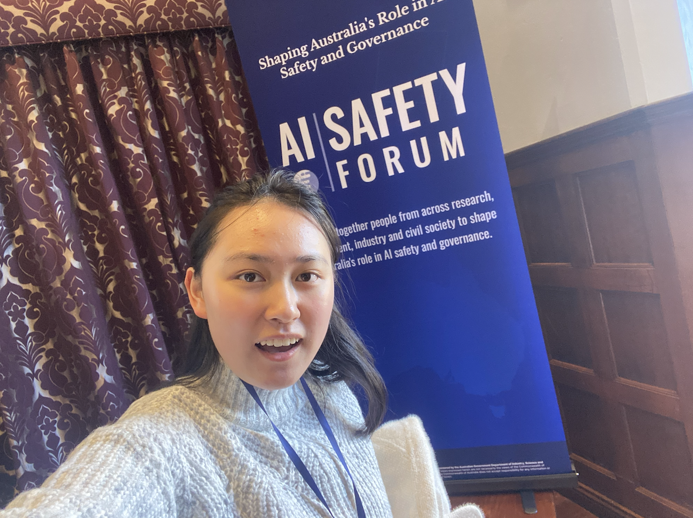
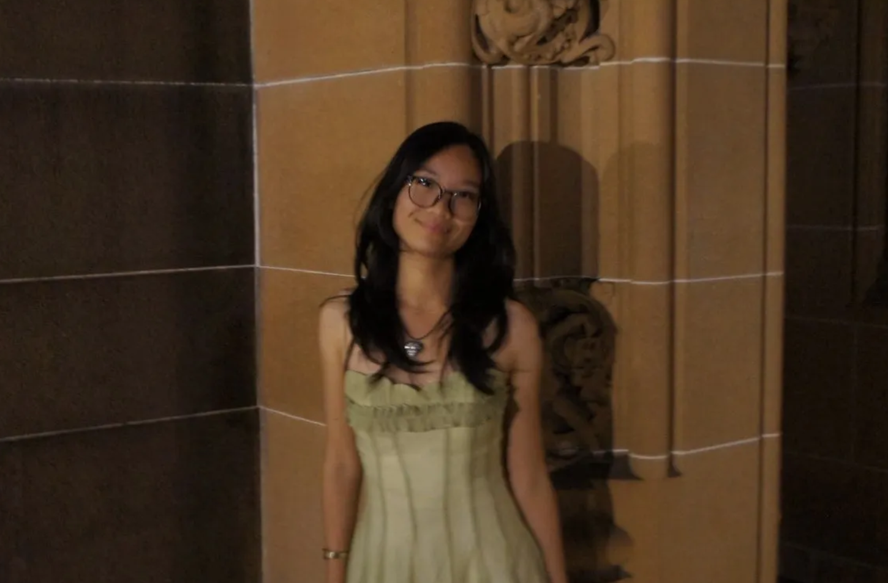
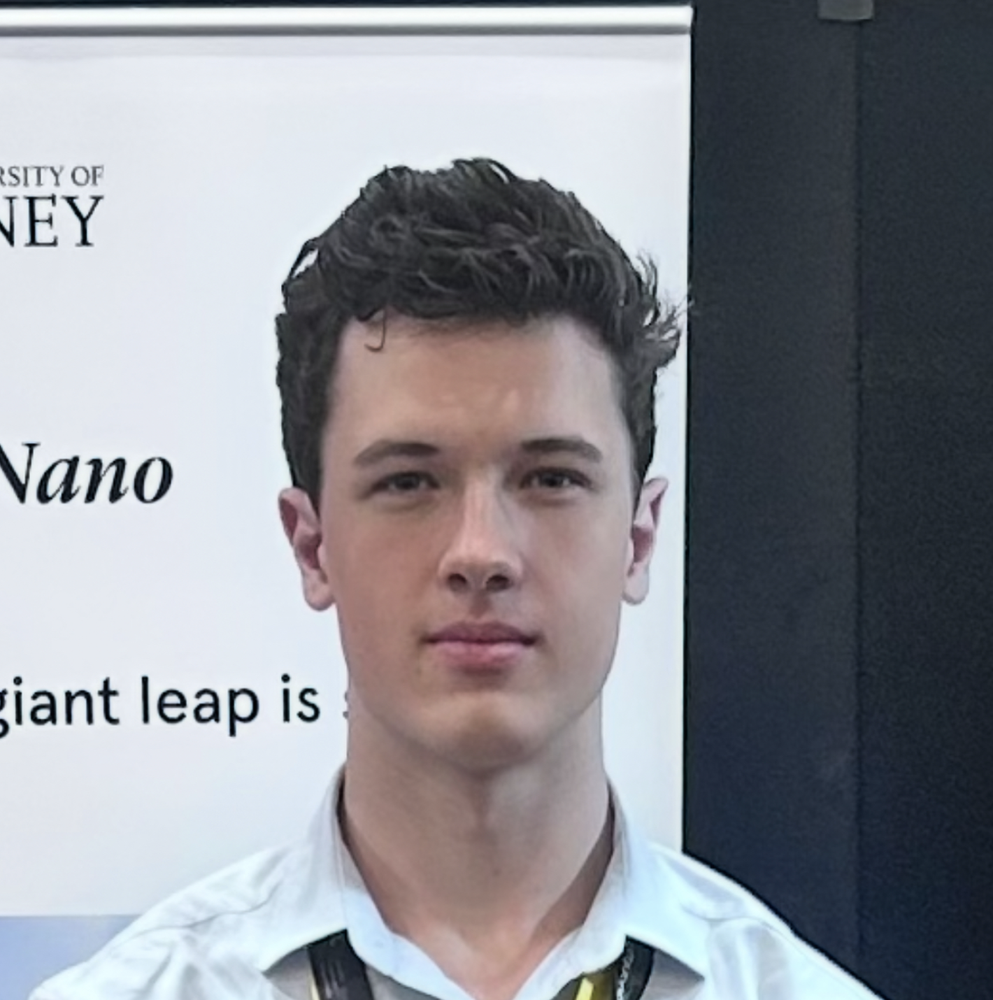

Vanessa Huang | President
I'm a 2nd year Data Science and Mathematics student who enjoys philosophy. When I'm not on campus, I'm probably taking a stroll along the Bay Run. I'm concerned about the risk that AI poses to liberal democracy. AI safety needs more voices in the room, including social science, politics and law expertise, and I'm hoping Paperclips will bring undergrads together from across the uni.

Jenny Nguyen | Secretary
I’m Jenny, and I’m a 2nd year Neuroscience and Medical Science student! I love creative writing, sociology and dance. You can usually find me at Toby’s Estate near the CPC reading scientific literature or sipping an ube latte at Taguan in Redfern. I’m interested in how hyper-dependence on AI leads to mental atrophy, memory degeneration and emotional apathy. The brain does not yield to what threatens its agency and creativity - your humanness is yours to sustain :)

Harry Le Poer Trench | Treasurer
TBC